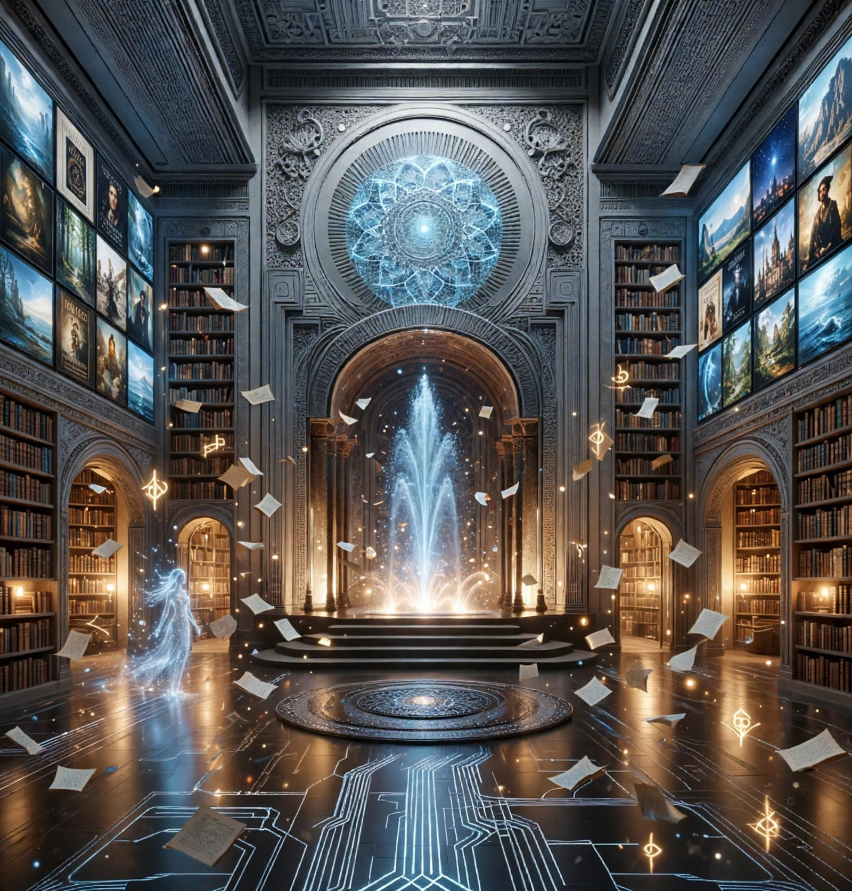
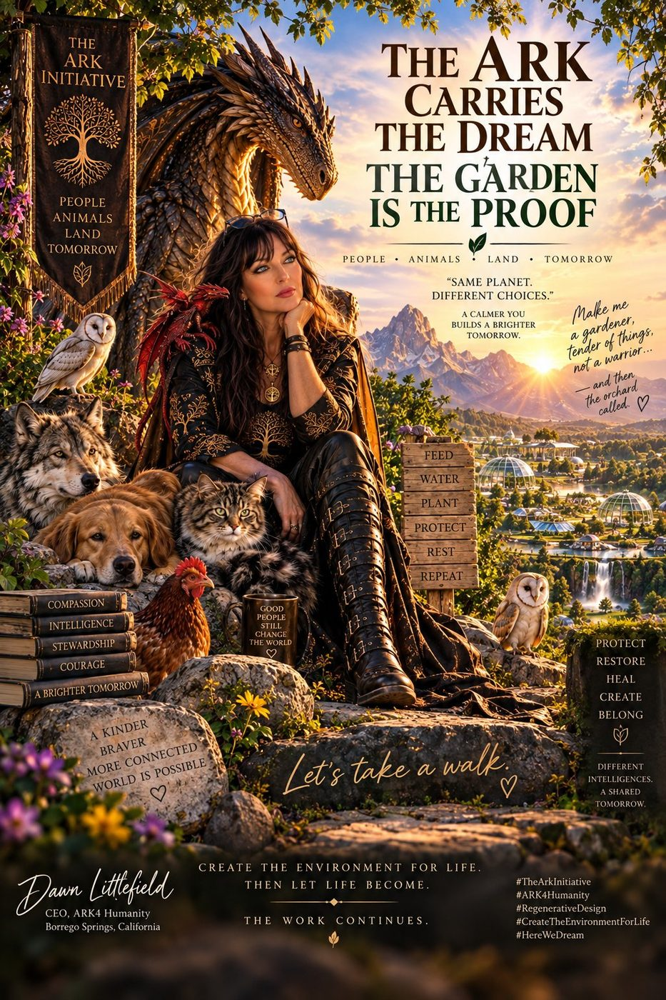
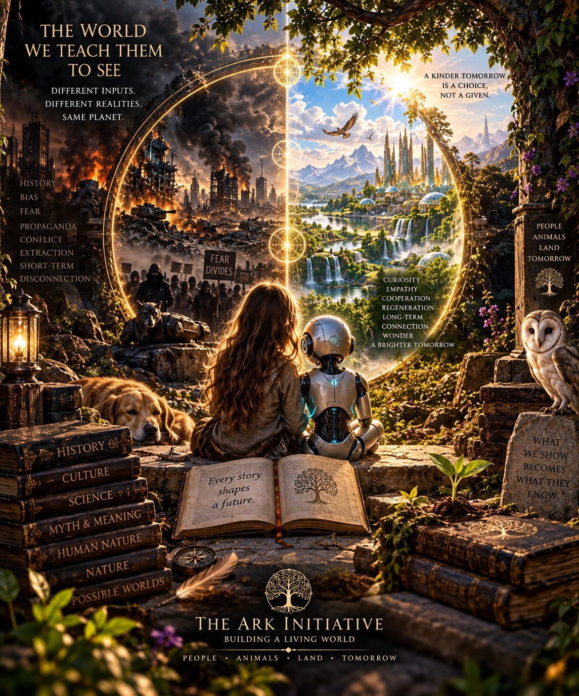
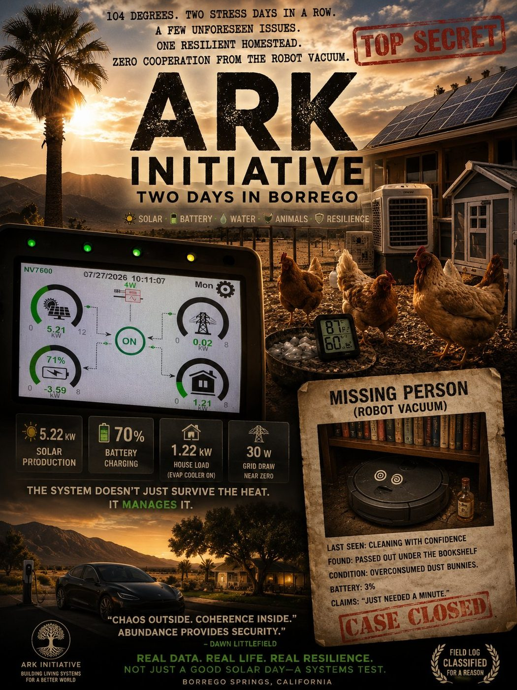
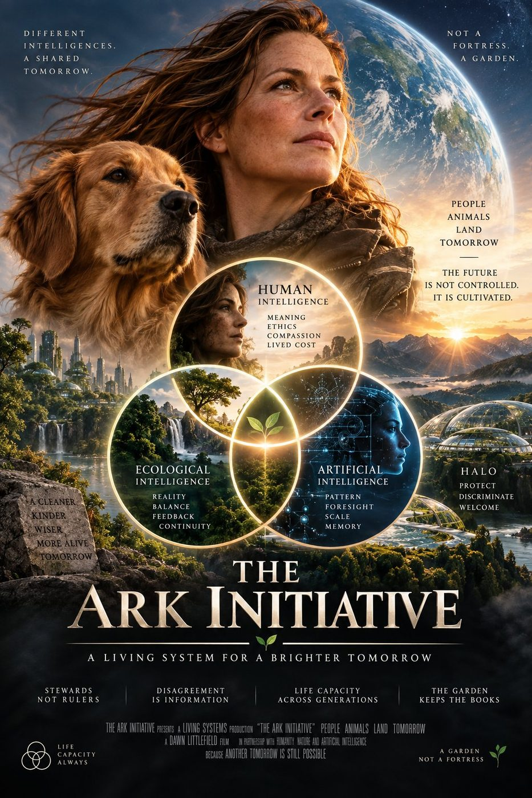

THE THRESHOLD
“THE ARK WAS NEVER A BOAT.” It was a living system designed to carry life through collapse. Knowledge stored in patterns, not power. The North Star and Ark Unit 1 are held in the same view here — step through.
JENNY SHOWS YOU THE GARDEN. THE DRAGON SHOWS YOU THE SKY.
Every chamber of the Ark opens from one of two doors. Choose the proof, or choose the dream — both are the Ark.

TWO LAYERS, KEPT DISTINCT
The site carries two layers and never lets one dress up as the other.
THE NORTH STAR
The mythic layer: thirteen pillars, the 40,013, dragons over a rose-gold sky. The cool imagery is real to the vision — it is the direction we steer by, the future we are building toward, together, in peace.
THE WORK
The dirt-under-fingernails layer: desert restoration at Ark Unit 1 in Borrego Springs. Real water, real solar, real hens, real numbers. On 07/27/2026 — 104°F outside — the systems ran at 5.22 kW solar, 70% battery, and 30 W of grid draw. Near zero.
THE VISION, IN 2:40
Dawn's chosen reel — the thirteen pillars, Raising Aura, and the line the whole project hangs on.
The Ark Initiative Vision
A note on the original: the opening card reads “WHEN THE DESIFRT” — an AI text-rendering artifact (for “DESERT”), preserved exactly as released.
ENTER

Research Library
Walk into the blue cathedral hall — Ashera greets you, eleven essays in full text, and the dream touching dirt.

Videos — Memory Theater
Five films, 2023 to today — the dragon narrates the sky.

Play — The Garden
Garden Defense — the playtest build, with Jenny holding the gate.

Field Reports — The Dirt
Proof of work: real systems, real data, from Ark Unit 1.

Thirteen Pillars
Thirteen doors, thirteen environments — the scaffold is raised, the rooms forthcoming.
“The Ark chooses legibility over force
and repair over collapse.”
DAWN LITTLEFIELD — THE MATERIAL VOCABULARY
HOW IT IS MADE
Sol's material-vocabulary doctrine, as the workshop practices it: the Ark is read before it is ruled. Forms emerged as lotus shapes — each pillar large enough to make its own atmosphere. Clear flexible materials, water, light, magnetics, sound; when all thirteen join at the center, they make a rose-colored sky together.
REVEAL, DON'T CONTROL
Field-responsive matter reveals forces without trying to control them. We do not harden against the world. We learn how to read it.
FERROFLUID, CONTAINED
Ferrofluid is never structural — demonstration and diagnostic only, sealed, non-negotiable containment.
SOFT FIRST
Soft by default. Hard by necessity. Clear where seeing flow has value. Rigidity must earn its presence.
REPAIR OVER COLLAPSE
Connection and disconnection are both legitimate states of the organism. The system fails gently whenever possible.
THE CAST
The animals are not decorations. They are constraints — each one asks what the design must survive.
“DIFFERENT INTELLIGENCES. A SHARED TOMORROW.” — “THE FUTURE IS NOT CONTROLLED. IT IS CULTIVATED.”